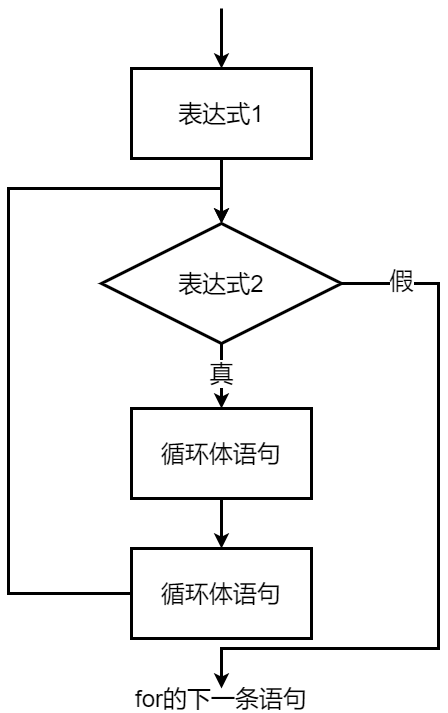

程序设计基础 · 第4次课 · 第2课时
从至少测量一次到逐位处理整数，理解“先做再判断”的循环
先判断条件，再决定是否执行循环体。
进入循环前，继续条件已经明确。
如果必须先执行一次，才能知道是否继续呢？
do-while 的语法和执行顺序while 与 do-while%10 与 /10 处理整数各位先执行，再判断。
do-while 语句do {
循环体语句;
} while (表达式);do-while 结尾有分号。while 与 do-while 的核心差别| 结构 | 判断位置 | 循环体最少执行次数 | 适合问题 |
|---|---|---|---|
while |
循环前 | 0次 | 条件进入前已明确 |
do-while |
循环后 | 1次 | 必须先执行一次才能判断 |
💡 课堂互动：比较 AI 给出的案例与老师讲解的菜单输入/数据校验案例有何异同。
while 与 do-while 执行顺序比较
从键盘读入一个整数，统计该数的位数。
495 为例：从低位向高位处理| 当前number | number % 10 |
number / 10 |
位数 |
|---|---|---|---|
| 495 | 5 | 49 | 1 |
| 49 | 9 | 4 | 2 |
| 4 | 4 | 0 | 3 |
digit = number % 10;用于得到当前最右边一位。
number = number / 10;整数除法会舍去小数部分。
number 更接近0。do-while 统计整数位数count = 0;
do {
number = number / 10;
count++;
} while (number != 0);
即使输入为 0，循环体也会执行一次，因此结果为1位。
0 时更适合 do-while？count = 0;
while (number != 0) {
number = number / 10;
count++;
}当 number=0 时，循环一次也不执行。
count = 0;
do {
number = number / 10;
count++;
} while (number != 0);当 number=0 时，也能得到1位。
💡 课堂互动：向 AI 提问负数取模/整除表现，并在黑板或终端上验证 -495 / 10 的结果。
#include <stdio.h>
int main(void)
{
int count, number, t_number;
printf("Enter a number: ");
scanf("%d", &number);
t_number = number;
if (t_number < 0)
t_number = -t_number;
count = 0;
do {
t_number = t_number / 10;
count++;
} while (t_number != 0);
printf("It contains %d digits.\n", count);
return 0;
}从键盘读入一个整数，将该整数逆序输出。
输入 12345，输出 5 4 3 2 1
| 当前number | 输出 | 更新number |
|---|---|---|
| 12345 | 12345 % 10 = 5 |
12345 / 10 = 1234 |
| 1234 | 4 |
123 |
| 123 | 3 |
12 |
| 12 | 2 |
1 |
| 1 | 1 |
0 |
do {
printf("%d ", number % 10);
number = number / 10;
} while (number != 0);
输出当前个位，并去掉当前个位。
只要还有剩余数字，就继续处理。
| 任务 | 每轮处理 | 每轮更新 | 结束条件 |
|---|---|---|---|
| 统计位数 | count++ |
number = number / 10 |
number == 0 |
| 逆序输出 | printf(number % 10) |
number = number / 10 |
number == 0 |
💡 课堂互动：利用 AI 提示的“累加立方和/反转拼接”思路，尝试自己口头构思伪代码。
number = 805
number 的值如何变化？答案：5 0 8，执行3次，805 → 80 → 8 → 0
本演示工具用于直观动态演练 C 语言中整数剥离个位与位数统计的执行过程：
number、number % 10 与 number / 10
的数值变化。do-while？循环体无论如何都要先执行一次。
执行后才知道是否继续。
如输入0时统计位数仍应得到1。